124
UNIDADE 4 - CAPÍTULO 5
Capítulo 5 - Plano cartesiano e as transformações geométricas
Representando um polígono no plano cartesiano
Estudamos anteriormente sobre como representar um polígono em um plano cartesiano.
► A reta x é a reta na posição horizontal do plano cartesiano. É chamada de eixo x ou eixo das abscissas.
► A reta y é a reta na posição vertical, sendo chamada de eixo y ou eixo das ordenadas.
► O ponto de intersecção dos eixos x e y é identificado como o ponto de origem O.
► Utilizando a mesma unidade de medida, numeramos os eixos x e y, obtendo o plano cartesiano.
► Neste caso, o triângulo ABC tem coordenadas A (3, 2), B (7, 7) e C (9, 2).
Vamos ampliar os eixos x e y e representar também os números inteiros negativos. Neste caso, teremos quatro partes que são chamadas de quadrantes.
► O ponto M pertence ao 1.º quadrante e tem coordenadas (5, 3), ou seja, abcissa e ordenada positiva.
► O ponto N pertence ao 2.º quadrante e tem coordenadas (- 4, 6), sendo a abcissa negativa e a ordenada positiva.
► O ponto P pertence ao 3.º quadrante e tem coordenadas (- 8, - 4), sendo tanto a abcissa quanto a ordenada negativa.
► O ponto Q pertence ao 4.º quadrante e tem coordenadas (11, - 7), sendo a abcissa positiva e a ordenada negativa.
![Plano cartesiano com os eixos x e y ampliados. Com o número zero no ponto central, o plano se divide em quatro quadrantes. No eixo x, a partir do zero para a direita os números são positivos. Do ponto zero à esquerda, os números são negativos. No eixo vertical y, do ponto zero para cima, os números são positivos. Do zero para baixo, os números são negativos. O plano cartesiano possui quatro pontos nomeados de M, N, P, Q, sendo um ponto para cada quadrante. No primeiro quadrante, localizado à direita e acima, o ponto M está na coordenada 5 do eixo x e 3 do eixo y. No segundo quadrante, à esquerda e acima, a letra N está na coordenada menos 4 do eixo x e 6 no eixo y. No terceiro quadrante, à esquerda e abaixo, a letra P está na coordenada menos 8 do eixo x e menos 4 do eixo y. No quarto quadrante, à direita e abaixo, a letra Q está na coordenada 11 do eixo x e menos sete do eixo y.](../../resources/images/unidade4/78.PNG)
125
UNIDADE 4 - CAPÍTULO 5
ENCONTRE SOLUÇÕES
1. Em seu caderno, escreva as coordenadas cartesianas dos pontos destacados no plano a seguir:
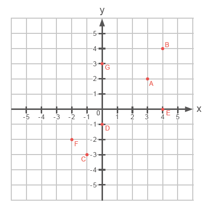2. Em um papel milimetrado, construa um plano cartesiano e localize os seguintes pontos:
► A (1, 3)
► B (- 3, - 4)
► C (0, - 3)
► D (- 4, 0)
► E (2, - 5)
3. Observe o triângulo representado no plano cartesiano abaixo.
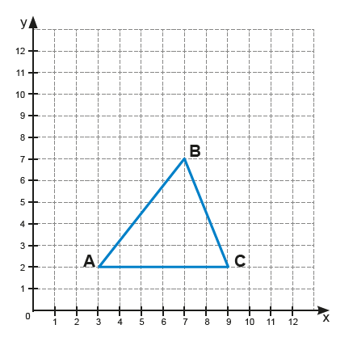a) Quais são as coordenadas dos vértices desse triângulo?
b) Qual é a classificação desse triângulo, de acordo com as medidas dos seus lados?
c) Qual é a área desse triângulo?
4. Os pontos A (3, - 1), B (- 1, - 1), C (- 1, 3) e D (3, 3) são vértices de um quadrilátero. Desenhe-o em um papel milimetrado e responda às questões abaixo no caderno.
a) Qual é o quadrilátero obtido?
b) Qual é a medida dos lados desse quadrilátero?
c) Qual é o perímetro desse quadrilátero?
d) Qual é a área desse quadrilátero?
5. (ENEM) A leitura do poema “Descrição da guerra em Guernica” traz à lembrança o famoso quadro de Picasso.
Entra pela janela
o anjo camponês;
com a terceira luz na mão;
minucioso, habituado
aos interiores de cereal,
aos utensílios que dormem na fuligem;
os seus olhos rurais
não compreendem bem os símbolos
desta colheita: hélices,
motores furiosos;
e estende mais o braço; planta
no ar, como uma árvore,
a chama do candeeiro. [...]
126
UNIDADE 4 - CAPÍTULO 5
Uma análise cuidadosa do quadro permite que se identifiquem as cenas referidas nos trechos do poema.
![Quadro Guernica de Pablo Picasso dividido em 18 quadrantes, sendo três linhas nomeadas de 1, 2, 3 e seis colunas nomeadas de a, b, c, d, e, f. No quadrante a1 o rabo e a cabeça de um touro. No a2, uma mulher com a cabeça virada para cima e a boca aberta. Ela segura um bebê no colo. No a3, a cabeça e o corpo do bebê, mais abaixo uma mão espalmada. No b1, o corpo do touro, à direita em cinza um pássaro olhando para cima. No b2, a continuação do corpo de um animal e o rabo de um cavalo. No b3, uma cabeça virada para cima com a boca aberta. À direita, as pernas traseiras do cavalo. No c1, uma lâmpada acesa, a cabeça do cavalo com os olhos e a boca abertos e mão segurando uma lamparina. No c2, o pescoço e o corpo do cavalo. No c3, uma das patas traseiras do cavalo, a barriga do cavalo e um braço virado para cima. No d1, um braço estendido, à direita olhos assuntados e parte de um nariz. No d2, um rosto olhando para cima e parte da pata dianteira do cavalo. No d3, mão com o punho fechado segurando um pedaço de pau, à direita a pata e o pé do cavalo. No e1, o pescoço e o cabelo de uma pessoa. À direita braço erguido com a mão espalmada. No e2, o cabelo e o corpo de uma pessoa. No e3, mãos e pés de uma pessoa. No f1, rosto de uma pessoa olhando para cima e de boca aberta. À direita, braço erguido com a mão espalmada. No f2, o pescoço e o corpo de uma pessoa. No f3, pernas e pés de uma pessoa.](../../resources/images/unidade4/81.PNG)
Podem ser relacionadas ao texto lido as partes:
a) a1, a2, a3
b) f1, e1, d1
c) e1, d1, c1
d) c1, c2, c3
e) e1, e2, e3
Transformações geométricas no plano cartesiano
Nos planos cartesianos a seguir temos representados os polígonos ABC, DEF e GHI.
![Plano cartesiano de zero a 12 duplicado em quatro quadrantes. Nele dois triângulos retângulos. O primeiro triângulo é azul e está no primeiro quadrante, localizado à direita e acima. Possui 3 vértices nomeados de D, E, F. O D está na coordenada 4 do eixo x e 4 do eixo y. O E, na coordenada 12 do x e 4 do y. O F, na coordenada 4 do x e 10 do y. O segundo triângulo é verde e está no terceiro quadrante, localizado à esquerda e abaixo. Possui 3 vértices nomeados de G, H, I. O G está na coordenada menos 4 do x e menos 4 do y. O H está na coordenada menos 12 do x e menos 12 do y. O I está na coordenada menos 4 do x e menos 10 do y.](../../resources/images/unidade4/83.PNG)
127
UNIDADE 4 - CAPÍTULO 5

a) Quais as coordenadas de cada um dos polígonos representados nos planos cartesianos?
b) Observando os polígonos ABC e DEF, qual relação podemos estabelecer entre eles?
c) Observando os polígonos DEF e GHI, qual relação podemos estabelecer?
Ao multiplicarmos as coordenadas dos vértices de um polígono qualquer, representado em um plano cartesiano, por um número inteiro obtemos um novo polígono que pode ou não ser simétrico ao polígono inicial.
Simetria em relação à origem do plano cartesiano
Observe o triângulo retângulo DEF e GHI representados no plano cartesiano.
![Plano cartesiano de zero a 12 duplicado em quatro quadrantes. Nele dois triângulos retângulos. O primeiro triângulo retângulo é azul e está no primeiro quadrante, localizado à direita e acima. Possui 3 vértices nomeados de D, E, F. O D está na coordenada 4 do eixo x e 4 do eixo y. O E, na coordenada 12 do x e 4 do y. O F, na coordenada 4 do x e 10 do y. O segundo triângulo é verde e está no terceiro quadrante, localizado à esquerda e abaixo. Possui 3 vértices nomeados de G, H, I. O G está na coordenada menos 4 do x e menos 4 do y. O H está na coordenada menos 12 do x e menos 12 do y. O I está na coordenada menos 4 do x e menos 10 do y.](../../resources/images/unidade4/84.PNG)
Vamos unir com um segmento de reta os vértices correspondentes dos dois triângulos.
![Plano cartesiano de zero a 12 duplicado em quatro quadrantes. Nele dois triângulos retângulos. O primeiro triângulo é azul e está no primeiro quadrante, localizado à direita e acima. Possui 3 vértices nomeados de D, E, F. O D está na coordenada 4 do eixo x e 4 do eixo y. O E, na coordenada 12 do x e 4 do y. O F, na coordenada 4 do x e 10 do y. O segundo triângulo é verde e está no terceiro quadrante, localizado à esquerda e abaixo. Possui 3 vértices nomeados de G, H, I. O G está na coordenada menos 4 do x e menos 4 do y. O H está na coordenada menos 12 do x e menos 12 do y. O I está na coordenada menos 4 do x e menos 10 do y. Os triângulos retângulos são simétricos e reflexo um do outro. Três retas estão traçadas unindo os vértices correspondentes das duas figuras. Todas as retas passam pela origem do plano cartesiano.](../../resources/images/unidade4/85.PNG)
128
UNIDADE 4 - CAPÍTULO 5
Veja que todos os segmentos de reta traçados, unindo os vértices correspondentes, passam pela origem do plano cartesiano. A distância da origem até os vértices do triângulo DEF são iguais as medidas da distância da origem até os vértices do triângulo GHI.
Compare as abcissas e ordenadas das coordenadas desses triângulos.
► Triângulo DEF: D (4, 4); E (12, 4); F (4, 10).
► Triângulo MNO: M (4, - 4); N (12, - 4); O (4, - 10).
Para traçarmos um polígono simétrico a outro, em relação à origem do plano cartesiano, devemos multiplicar todas as coordenadas deste polígono por - 1.
Simetria em relação ao eixo x
Observe o triângulo retângulo DEF e MNO representados no plano cartesiano.
![Plano cartesiano de zero a 12 duplicado em quatro quadrantes. Nele dois triângulos retângulos. O primeiro triângulo é azul e está no primeiro quadrante, localizado à direita e acima. Possui 3 vértices nomeados de D, E, F. O D está na coordenada 4 do eixo x e 4 do eixo y. O E, na coordenada 12 do x e 4 do y. O F, na coordenada 4 do x e 10 do y. O segundo triângulo é amarelo e está no quarto quadrante, localizado à direita e abaixo. Possui 3 vértices nomeados de M, N, O. O M está na coordenada 4 do x e menos 4 do y. O N está na coordenada 12 do x e menos 4 do y. O vértice O está na coordenada 4 do x e menos 10 do y.](../../resources/images/unidade4/86.PNG)
Compare as abcissas e ordenadas das coordenadas desses triângulos.
► Triângulo DEF: D (4, 4); E (12, 4); F (4, 10).
► Triângulo MNO: M (4, - 4); N (12, - 4); O (4, - 10).
Note que esses triângulos são simétricos em relação ao eixo x.
Para traçarmos um polígono simétrico a outro, em relação ao eixo x, mantemos as abcissas e multiplicamos por - 1 as ordenadas.
129
UNIDADE 4 - CAPÍTULO 5
Simetria em relação ao eixo y
Observe o triângulo retângulo DEF e XYZ representados no plano cartesiano.
![Plano cartesiano de zero a 12 duplicado em quatro quadrantes. Nele dois triângulos retângulos. O primeiro triângulo é azul e está no primeiro quadrante, localizado à direita e acima. Possui 3 vértices nomeados de D, E, F. O D está na coordenada 4 do eixo x e 4 do eixo y. O E, na coordenada 12 do x e 4 do y. O F, na coordenada 4 do x e 10 do y. O segundo triângulo é vermelho e está no segundo quadrante, localizado à esquerda e abaixo. Possui 3 vértices nomeados de X, Y, Z. O X está na coordenada menos 4 do x e 4 do y. O Y está na coordenada menos 12 do x e 4 do y. O Z está na coordenada menos 4 do x e 10 do y.](../../resources/images/unidade4/87.PNG)
Compare as abcissas e ordenadas das coordenadas desses triângulos.
► Triângulo DEF: D (4, 4); E (12,4); F (4, 10).
► Triângulo XYZ: X (- 4, 4); Y (- 12, 4); Z (- 4, 10).
Note que esses triângulos são simétricos em relação ao eixo y.
Para traçarmos um polígono simétrico a outro, em relação ao eixo y, mantemos as ordenadas e multiplicamos por - 1 as abcissas.
Encontre soluções
1. Em um papel quadriculado construa o polígono ABCD e trace o seu simétrico em relação à origem.
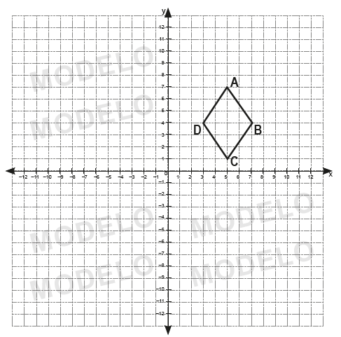2. Dado o polígono MNOPQ, construa em seu caderno um polígono simétrico a ele, em relação ao eixo x e y.
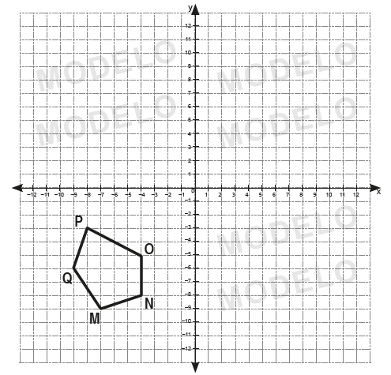130
UNIDADE 4 - CAPÍTULO 5
Construindo figuras geométricas simétricas com softwares
Para nos auxiliar na construção de figuras geométricas podemos usar softwares de geometria dinâmica. Estes programas são ambientes virtuais que apoiam no ensino e aprendizagem da Geometria.
Vamos construir um quadrilátero utilizando o software GeoGebra. O GeoGebra é um software livre e dinâmico de Matemática que foi criado em 2001 por Markus Hohenwarter, matemático austríaco. O programa possui uma versão on-line e uma versão para download, ambas disponíveis no endereço: http://www.geogebra.org/. Para esse estudo, vamos utilizar a versão disponível em: https://www.geogebra.org/classic.
Simetria de reflexão em relação a uma reta
a) No menu superior, selecione a ferramenta “Polígono” para construir o polígono ABCD.
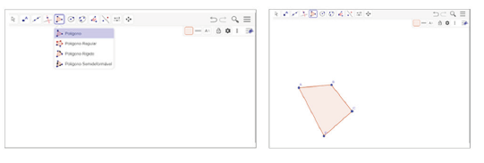b) Em seguida, selecione no menu superior a opção “Reta” para traçar a reta EF
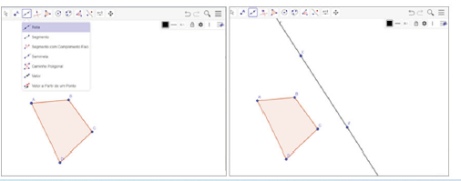c) Usando a ferramenta “Reflexão em Relação a uma Reta” trace o polígono A’B’C’D’ simétrico ao polígono ABCD em relação a reta EF.
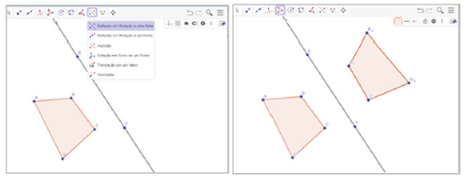
1. Com um colega e com o auxílio da ferramenta de mover o lado do polígono, o movimentem. O que é possível observar?
Simetria de rotação
Usando o GeoGebra vamos rotacionar um polígono ABCDE em torno de um ponto qualquer.
131
UNIDADE 4 - CAPÍTULO 5
a) Construa o polígono ABCDE selecionando no menu superior “Polígono”. Clique em “Rotação em Torno de um Ponto” para marcar o ponto F. Esse ponto será o centro de rotação.
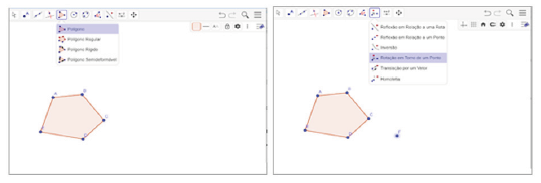b) Selecione a ferramenta “Rotação em Torno de um Ponto”, clique primeiro no polígono e depois no ponto. Você deverá indicar a medida do ângulo e o sentido em que a rotação será realizada. No exemplo mostrado, usamos a medida do ângulo de 45º no sentido horário para realizar a rotação.
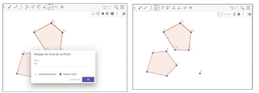2. Com um colega e com o auxílio da ferramenta de mover o lado do polígono, o movimentem. O que é possível observar?
Simetria de translação
Usando o GeoGebra vamos transladar um polígono ABC.
a) Construa o polígono ABC selecionando no menu superior “Polígono”. Clique em “Vetor” para traçar um vetor qualquer que será o vetor da translação.
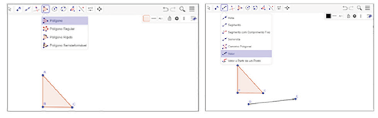b) Selecione a ferramenta “Translação” por um vetor. Em seguida, clique sobre o polígono e sobre o vetor. Aparecerá o polígono A’B’C’ que corresponde a imagem transladada do polígono ABC.
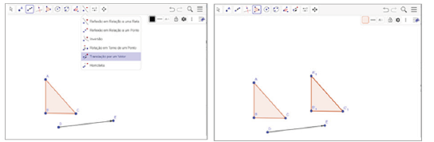3. Com um colega e com o auxílio da ferramenta de mover o lado do polígono, o movimentem. O que é possível observar?
132
UNIDADE 4 - CAPÍTULO 5
Probabilidade e estatística
Pictograma
1. Ao vender os ingressos para um determinado show, uma casa de espetáculo fez uma pesquisa para saber a faixa etária das pessoas que iriam assistir à atração e assim poder planejar os próximos eventos. O resultado dessa pesquisa está representado no gráfico a seguir:
Faixa etária dos clientes
![Pictograma, gráfico com imagens e símbolos para representar quantidade. O gráfico intitulado “Faixa etária dos clientes”, é uma pesquisa para saber a faixa etária dos clientes de uma casa de espetáculo que assistiram um determinado show. Nesse gráfico utiliza-se a figura de uma mulher para representar a cada 8 mulheres, e a figura de um homem para representar a cada 8 homens. Dados do gráfico:
20 a 30 anos = 7 figuras de homens + 4 figuras de mulheres;
31 a 40 anos = 5 figuras de homens + 8 figuras de mulheres;
41 a 50 anos = 3,5 figuras de homens + 3 figuras de mulheres;
51 a 60 anos = 3 figuras de homens + 4,5 figuras de mulheres.
Fonte: Casa de espetáculo.](../../resources/images/unidade4/97.PNG)
a) Troque ideias com um colega e expliquem como o gráfico foi construído.
b) De acordo com a faixa etária, qual delas apresenta a maior quantidade de homens e qual apresenta a maior quantidade de mulheres?
c) Qual é a faixa etária que possui a maior quantidade de pessoas?
d) De acordo com o gráfico, quantas pessoas compareceram ao show?
e) Nesse show compareceram mais mulheres ou homens?
f) Qual é a faixa etária que possui a menor quantidade de homens? E de mulheres?
g) Nesse gráfico utilizou-se a figura de uma mulher para representar a cada 8 mulheres e a figura de um homem para representar a cada 8 homens. Qual outro desenho poderia ser usado para representar a mesma situação?
O gráfico utilizado para representar os dados da pesquisa é denominado de pictograma.
Pictograma é um gráfico em que se utilizam imagens e símbolos para representar quantidades.
2. No pictograma a seguir, temos representadas as vendas de uma concessionária no primeiro semestre de 2022.
![Pictograma, gráfico com imagens e símbolos para representar quantidade. O gráfico intitulado “Quantidade de veículos vendidos no 1º semestre”, apresenta a quantidade de veículos vendidos, por mês, durante o primeiro semestre de um determinado ano. Nesse gráfico, utiliza-se a figura de um carro vermelho para representar a venda a cada 12 carros vendidos.
Dados do gráfico:
Janeiro: 9 figuras de carro vermelho;
Fevereiro: 10 figuras de carro vermelho;
Março: 6 figuras de carro vermelho;
Abril: 5 figuras de carro vermelho;
Maio: 6,5 figuras de carro vermelho;
Junho: 6,5 figuras de carro vermelho.
Fonte: Escritório da concessionária.](../../resources/images/unidade4/98.PNG)
133
UNIDADE 4 - CAPÍTULO 5
a) Qual foi a quantidade de veículos vendidos no primeiro trimestre de 2022?
b) Em qual mês as vendas foram menores?
c) Em quais meses foram vendidos a mesma quantidade de veículos?
d) Quantos veículos foram vendidos no primeiro semestre de 2022?
3. Uma escola municipal fez um levantamento dos livros que foram emprestados no ano letivo para verificar quais os gêneros preferidos pelos alunos. O resultado do levantamento está representado no pictograma abaixo.
![Pictograma, gráfico com imagens e símbolos para representar quantidade. O gráfico intitulado “Livros emprestados na biblioteca da escola”, apresenta a quantidade de livros emprestados por gêneros preferidos pelos alunos. Nesse gráfico, utiliza-se a figura de um livro para representar a quantidade emprestada
Dados do gráfico:
Romance: 10,5 figuras de livro;
Poesia: 6 figuras de livro;
Policial: 7,5 figuras de livro;
Crônica: 5 figuras de livro;
Ficção Científica: 8 figuras de livro.
Fonte: Biblioteca da escola.](../../resources/images/unidade4/99.PNG)
a) Qual foi o gênero preferido pelos alunos?
b) Foram emprestados 108 livros de poesia. Quanto representa cada 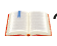?
c) Quantos livros de cada gênero foram emprestados nesse ano?
d) Quantos livros foram emprestados ao total?
e) Qual é o seu gênero de livro preferido?
4. No pictograma a seguir temos as vendas, em toneladas, de uma empresa de pescados durante 4 anos seguidos.
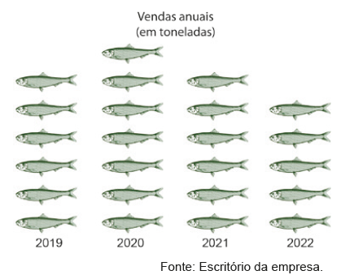
a)
No ano de 2020 foram vendidas 21 mil toneladas de peixes.
Quanto representa cada
?
b) Quantas toneladas foram vendidas nos demais anos?
c) Quantas toneladas foram vendidas ao todo nesses 4 anos?
5. Com um colega, pesquisem gráficos pictóricos em jornais, revistas ou sites e colem no caderno. Analisem e escrevam um texto descrevendo as informações presentes em cada gráfico pictórico pesquisado.

134
UNIDADE 4 - CAPÍTULO 5
RELEMBRE
1. Blu-ray Disc, também conhecido como BD, é um formato de disco óptico com 12 cm de diâmetro (igual ao CD e ao DVD) para vídeo e áudio de alta definição e armazenamento de dados de alta densidade. É uma alternativa ao DVD e capaz de armazenar filmes até 1080p full HD de até 4 horas sem perdas. Requer uma TV full HD de LCD, plasma ou LED para explorar todo o seu potencial. Qual é a medida do raio de um disco Blu-ray?
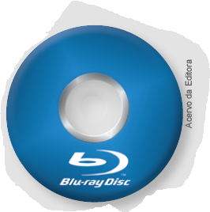2. Uma pista de corrida tem forma circular e seu diâmetro mede 70 m. Um atleta corre, diariamente, um total de 5 km. Qual é o número mínimo aproximado de voltas que ele corre, todos os dias, nessa pista? (Use π = 3,14).
3. Reproduza as figuras abaixo em uma malha quadriculada e usando a simetria de reflexão desenhe a figura simétrica de cada uma delas em relação ao eixo de simetria.
![Uma malha quadrada de 12 colunas por seis linhas. Ela está dividida ao meio por uma linha vermelha na vertical denominada de Eixo de Simetria. Do lado direito do eixo, com seis linhas e seis colunas uma figura geométrica amarela no formato de uma flecha apontada para a direita. O corpo da flecha tem o formato de um triângulo invertido. Ela inicia na segunda coluna, terceira e quarta linhas. O restante do corpo dela ocupa dois quadrados na terceira coluna, linhas 3 e 4. A ponta da flecha, no formato de um triângulo isósceles, inicia na coluna 4, linhas 2, 3, 4, 5 e termina com o vértice apontado para a direita, localizo na coluna 5, ocupando a metade dos quadrados em diagonal nas linhas 3 e 4.](../../resources/images/unidade4/f.PNG) Eixo de simetria
Eixo de simetria
![Uma malha quadrada de 12 colunas por seis linhas. Ela está dividida ao meio por uma linha vermelha na vertical denominada de Eixo de Simetria. Do lado esquerdo do eixo, com seis linhas e seis colunas, uma figura geométrica azul no formato de uma cruz, na região central. Ela ocupa o espaço de 12 quadrados. Dois deles estão na parte de cima da cruz localizados na segunda linha, terceira e quarta colunas. O centro da cruz ocupa oito quadrados localizados quatro na parte de cima: linha 3, colunas 2, 3, 4, 5. E quatro na parte debaixo, linha 4, colunas 2, 3, 4, 5. Os outros dois quadrados restantes estão na parte debaixo da cruz localizados na quinta linha, terceira e quarta colunas.](../../resources/images/unidade4/g.PNG) Eixo de simetria
Eixo de simetria
4. (Exame Nacional de Matemática) O símbolo ao lado está desenhado nas placas do Parque das Nações que assinalam a localização dos lavabos. As figuras a seguir representadas foram desenhadas com base nesse símbolo. Em cada uma delas, está desenhada uma reta r. Em qual delas a reta r é um eixo de simetria?
![Dentro de um quadrado o símbolo composto de duas figuras. O primeiro é um círculo com dois pontos: um à esquerda e o outro à direita, representando os olhos. Acima do círculo dois triângulos, um à esquerda e outro à direita com os vértices apontados para o centro. Juntos eles lembram a uma fita, remetendo ao gênero feminino. À direita, outro círculo com dois pontos: um à esquerda e o outro à direita. Abaixo do círculo dois triângulos, um à esquerda e outro à direita com os vértices apontados para o centro. Juntos eles lembram a uma gravata, remetendo ao gênero masculino.](../../resources/images/unidade4/100.PNG) 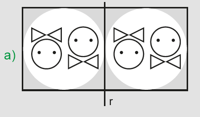
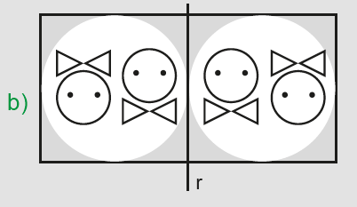
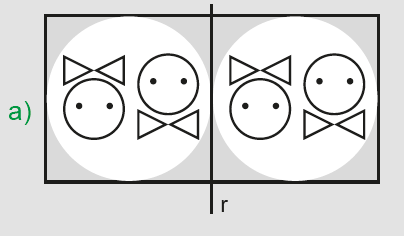
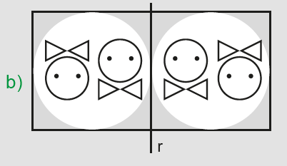
135
UNIDADE 4 - CAPÍTULO 5
5. (ENEM) Um decorador utilizou um único tipo de transformação geométrica para compor pares de cerâmicas em uma parede. Uma das composições está representada pelas cerâmicas indicadas por I e II.
![3 imagens, Em um quadrado três pontos em diagonal com início no canto inferior esquerdo. À direita, no canto inferior direito, um triângulo com o vértice apontado para cima, Em um quadrado três pontos em diagonal com início no canto superior esquerdo. À direita, no canto superior direito, um triângulo com o vértice apontado para baixo, Em um quadrado três pontos em diagonal com início no canto superior direito. À esquerda, no canto superior esquerdo, um triângulo com o vértice apontado para baixo](../../resources/images/unidade4/106.PNG)
Utilizando a mesma transformação, qual é a figura que compõe para com a cerâmica indicada por III?
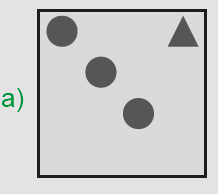 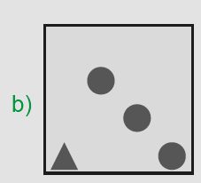 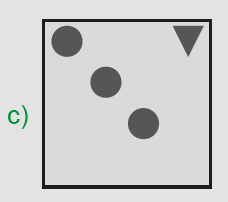 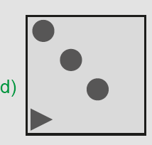
6. Construa, em um plano cartesiano, o polígono ABCD de coordenadas
A (- 10, 4), B
(- 6, 7), C
(- 4, 5) e D
(- 8, 2),
depois trace o seu
simétrico em relação a origem do plano cartesiano e em relação ao eixo
y.